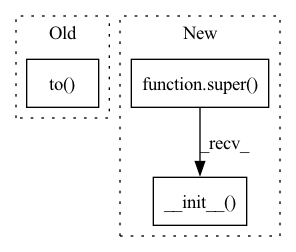

Pattern ID :31911

Before Change
self.actor_targ.load_state_dict(self.actor.state_dict())
self.Q = MLPCritic(input_dim, action_dim).to(get_device())
self.Q_targ = MLPCritic(input_dim, action_dim).to(get_device())
set_requires_grad_flag(self.Q_targ, False)
self.Q_targ.load_state_dict(self.Q.state_dict())
// optimizers
After Change
// hyper-parameters
super().__init__(
input_dim=input_dim,
action_dim=action_dim,
gamma=gamma,
lr=lr,
polyak=polyak
)
self.action_noise = action_noise
// networks
In pattern: SUPERPATTERN
Frequency: 4
Non-data size: 3
Instances
Fragment ID: 93240060
Project Name: zhihanyang2022/off-policy-continuous-control
Commit Name: 3392e9e0dbce2773d54909c38630d6ee428a589f
Time: 2021-06-03
Author: yangz2@carleton.edu
File Name: offpcc/algorithms/ddpg.py
M Class Name: DDPG
N Class Name: DDPG
M Method Name: __init__(7)
N Method Name: __init__(7)
M Parent Class: OffPolicyRLAlgorithm
N Parent Class: OffPolicyRLAlgorithm
M File Name: offpcc/algorithms/ddpg.py
N File Name: offpcc/algorithms/ddpg.py
M Start Line: 31
M End Line: 55
N Start Line: 32
N End Line: 57
'>
Before Change
self.actor = MLPGaussianActor(input_dim=input_dim, action_dim=action_dim).to(get_device())
self.Q1 = MLPCritic(input_dim=input_dim, action_dim=action_dim).to(get_device())
self.Q1_targ = MLPCritic(input_dim=input_dim, action_dim=action_dim).to(get_device())
set_requires_grad_flag(self.Q1_targ, False)
self.Q1_targ.load_state_dict(self.Q1.state_dict())
self.Q2 = MLPCritic(input_dim=input_dim, action_dim=action_dim).to(get_device())
After Change
// hyperparameters
super().__init__(
input_dim=input_dim,
action_dim=action_dim,
gamma=gamma,
lr=lr,
polyak=polyak
)
self.autotune_alpha = autotune_alpha
if autotune_alpha:
'>
Fragment ID: 93240058
Project Name: zhihanyang2022/off-policy-continuous-control
Commit Name: 184e5ca05c2345e5a168f36f00872b7da8a1696c
Time: 2021-06-05
Author: yangz2@carleton.edu
File Name: offpcc/algorithms/sac.py
M Class Name: SAC
N Class Name: SAC
M Method Name: __init__(8)
N Method Name: __init__(8)
M Parent Class: OffPolicyRLAlgorithm
N Parent Class: OffPolicyRLAlgorithm
M File Name: offpcc/algorithms/sac.py
N File Name: offpcc/algorithms/sac.py
M Start Line: 43
M End Line: 75
N Start Line: 46
N End Line: 73
'>
Before Change
if torch.cuda.is_available():
for net in self.get_networks():
net.to(torch.device("cuda"))
def get_networks(self):
return [self.pi]
After Change
discrete,
train_config=None
) -> None:
super().__init__()
self.state_dim = state_dim
self.action_dim = action_dim
self.discrete = discrete
'>
Fragment ID: 93240059
Project Name: hcnoh/gail-pytorch
Commit Name: 836089783bca2f49d10d3de815a654b7ee0a2503
Time: 2021-11-16
Author: rhc0624@gmail.com
File Name: models/nets.py
M Class Name: Expert
N Class Name: Expert
M Method Name: __init__(5)
N Method Name: __init__(5)
M Parent Class: Module
N Parent Class:
M File Name: models/nets.py
N File Name: models/nets.py
M Start Line: 115
M End Line: 119
N Start Line: 113
N End Line: 113
'>
Before Change
self.batch_size = batch_size
self.device = device
self.criterion = torch.nn.MSELoss()
self.mone = torch.FloatTensor([-1]).to(device)
self.tensorboard_counter = 0
if K <= 0:
self.K = 1 / self.data_dim
After Change
class VarianceDiscriminator(torch.nn.Module):
def __init__(self, data_dim, gamma=0.1, K=-1):
super().__init__()
parameters = {
"betas" : [0.5, 0.999],
"z_dim" : 32,
"size" : 16,
'>
Fragment ID: 93240056
Project Name: digitalphonetics/ims-toucan
Commit Name: bf64e87259d9369d5ec32e4c524995cd7b284f15
Time: 2023-03-01
Author: lux.florian@gmail.com
File Name: TrainingInterfaces/Text_to_Spectrogram/ToucanTTS/VarianceDiscriminator.py
M Class Name: VarianceDiscriminator
N Class Name: VarianceDiscriminator
M Method Name: __init__(4)
N Method Name: __init__(6)
M Parent Class: torch.nn.Module
N Parent Class:
M File Name: TrainingInterfaces/Text_to_Spectrogram/ToucanTTS/VarianceDiscriminator.py
N File Name: TrainingInterfaces/Text_to_Spectrogram/ToucanTTS/VarianceDiscriminator.py
M Start Line: 19
M End Line: 71
N Start Line: 26
N End Line: 74